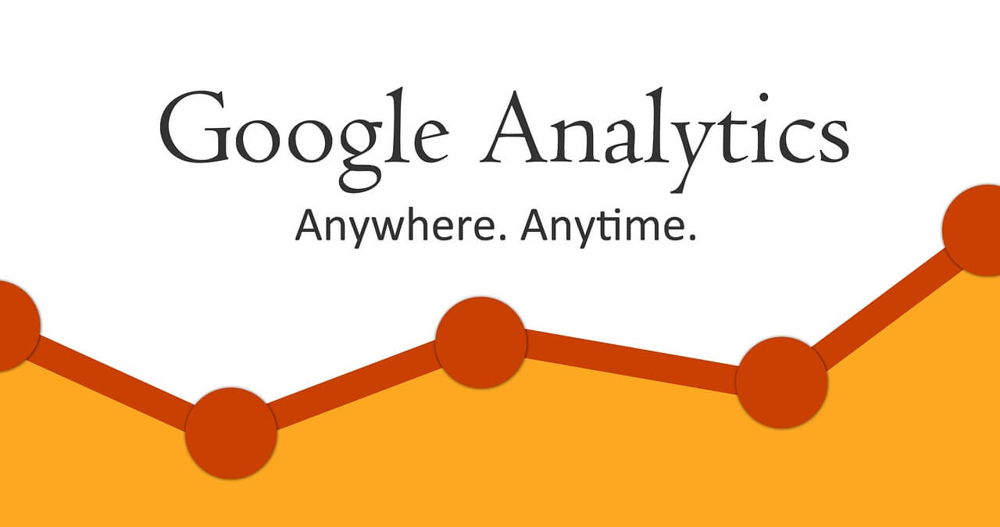
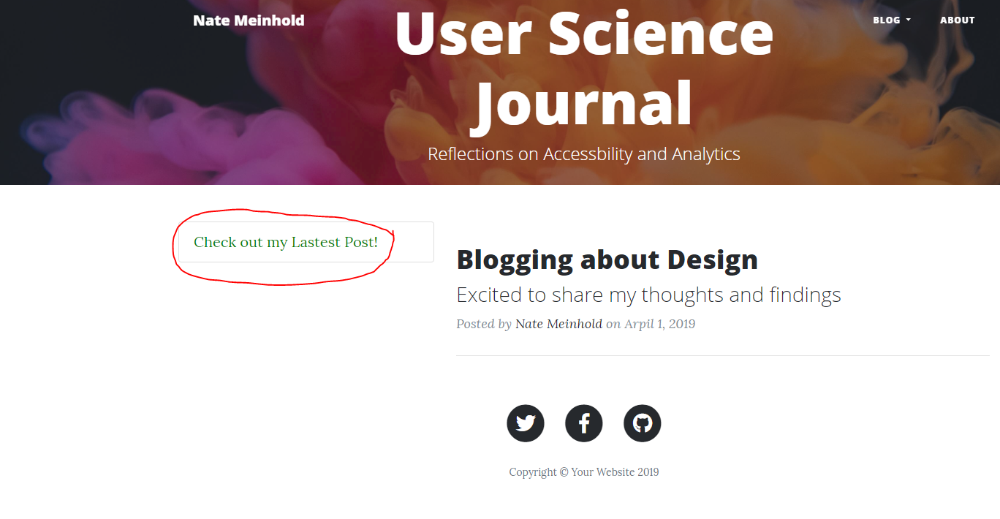
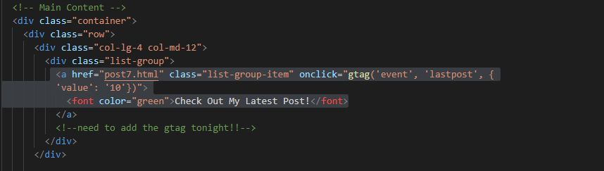
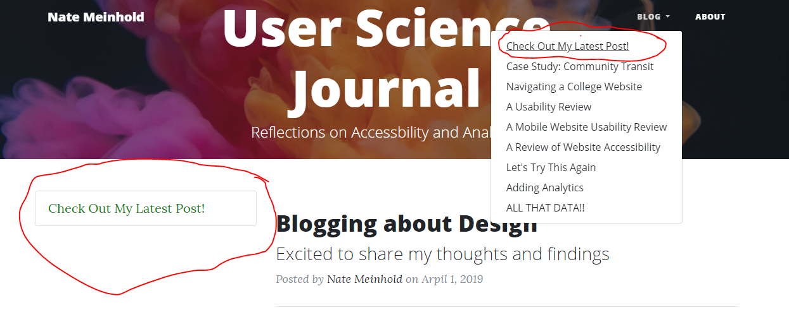
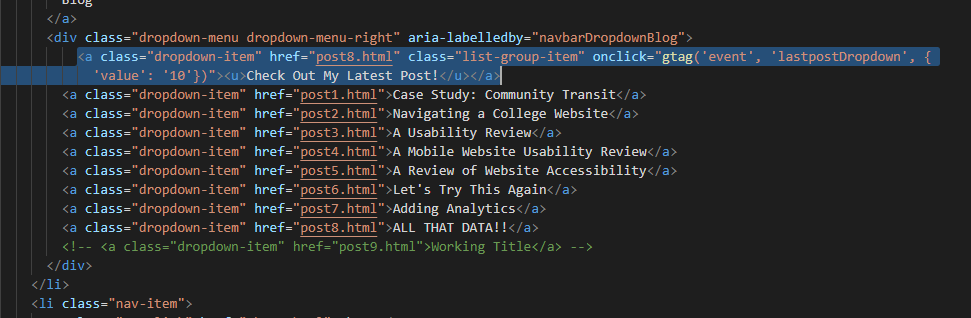
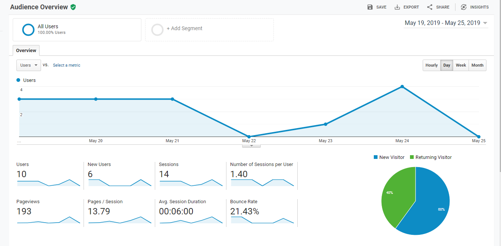
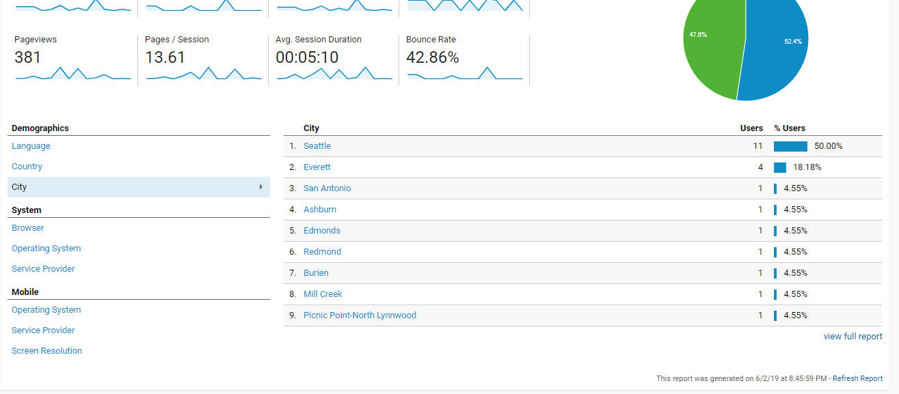

Goals Revisted
Building off the Last Week's Post this week we're going to be looking at how to make small changes to increase user traffic to your site. Or to funnel your users to where YOUwant them to go!
 Google AnalyticsWhy it matters:
Knowing your users' habits on you site will help you develop a more user-friendly site.
While predicting what they will do is never going to be 100%, some trial and error may surpise you.
A simple change might:
- Draw users to a previously ingnored page.
- Draw users to a previously read page (bad!).
- Drive up sales as clients find your products more easily.
- Increase Add Revenue if you can accomadate more users.
What We're Testing this Week:
Last Week, I added a link on the homepage to take users to the most recent post.
  Latest PostFor fun, I also made the text in the link green. There is no other green opject on the page, which makes the green text really stand out.
This week, I added a link to the "latest post" (it's still post 8 though, as this page was not up and running at the time) within the drop-down navigation bar.
I kept the green-colored link on the main page, it has a different gtag so it will not interfere with the results.
  Latest Post RevampedHypothosis
Before we get started, a few thoughts about my users and the sort of data I will see from this goal.
This week I am expecting to see more goals completed (as there are now two goals on the site).
I am expecting to see more page views on post 8 as that was the post the goals were linking to.
Results
 Google Audience Overview for the week of 5/19 to 5/25.This week was a little sad on data, I asked for some clicks a little later in the week and so they have not "resolved" on the Analytics paqe quite yet.
I only had my own clicks so far testing that the goals worked but I can always re-evaluate and re-submit this when I have a little more data to look through.
What I noticed (from what I could see)
- I'm still getting a trickle of new users, during a two week period there were 11 new users.
- Users spent an average of about 5 minutes on the site before leaving.
- Users looked at 13 pages before leaving!.
I was surprised to see that I am starting to slowly get some demographic information.
Below the main page, there was a section for where people are and for the language they speak.
The first two sections were pretty normal; Country: USA
Language: American-Style English (pretty impressive still but if you already know the country, this is a pretty good guess.)
The cities are where it get's interesting..I expected the viewers to be from the Seattle-area...where we are. But I don't know anyone in San Antonio or in Ashburn to ask to look over my site from there.
All of this information is cool to see where your audience is from, but it is kind of creepy being able to see as much of this.
 Detail of Google Analytics Goal Overview on CityConclusion
I am still blown away by just how amazing these tools are for developers, I really would like to shoot
I am just one developer, working on one tiny website, but I can't help to imagine what a tool this would be to a large website with millions of users
Facebook for instance: with enough active users, a developer could change something on the page and watch users move through the site in real time.
They would know the instant a change had been made, or if the ad campaign is reaching their target audience. I feel like right know I am using Analytics for "good" but at the same time, it is astounding just how powerful Google Analytics is for marketing.